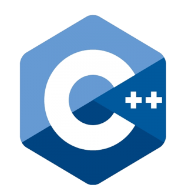
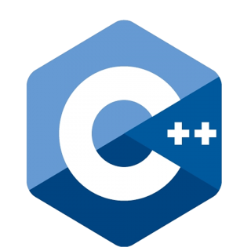
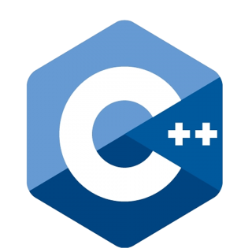

Programador trainee con experiencia autodidacta en diferentes lenguajes, actualmente en búsqueda de experiencia laboral en empresas con el fin de obtener conocimientos que me permitan insertarme en el mercado laboral de la programación. Busco trabajo como desarrollador java aunque también poseo conocimientos de C++ y Python. Aspiro a ser un excelente programador en dicho lenguaje y aprender todas las tecnologías que me permitan optimizar el trabajo, tales como Springboot, Hibernate, Git, etc. Me interesan también las bases de datos SQL de las cuales tengo conocimientos gracias a prácticas que he realizado con MySQL en mi propia computadora, aunque estoy abierto a la posibilidad de aprender NoSQL si es conveniente. He abandonado la docencia para seguir un camino nuevo de mucho mayor progreso profesional y económico aprovechando toda la experiencia y habilidades adquiridas a través de los años.
Mis conocimientos de inglés provienen de mi experiencia comunicándome con extranjeros en redes sociales y consumir entretenimiento (video juegos y series principálmente) en completo inglés (subtítulos incluídos). Cabe aclarar que las bases de este idioma las aprendí en la escuela secundaria. Se me ha felicitado por mi pronunciación, aunque reconozco que es un aspecto en el cual se puede mejorar todavía más.
Egresado de la carrera de técnico superior en bromatología;
Estudiante autodidacta de ciencias exactas;
Carrera de profesorado de química abandonada en cuarto año con muy buenas calificaciones;
Lo anteriormente mencionado me ha permitido tener conocimientos profundos
sobre química, matemática y, en menor medida, física.
